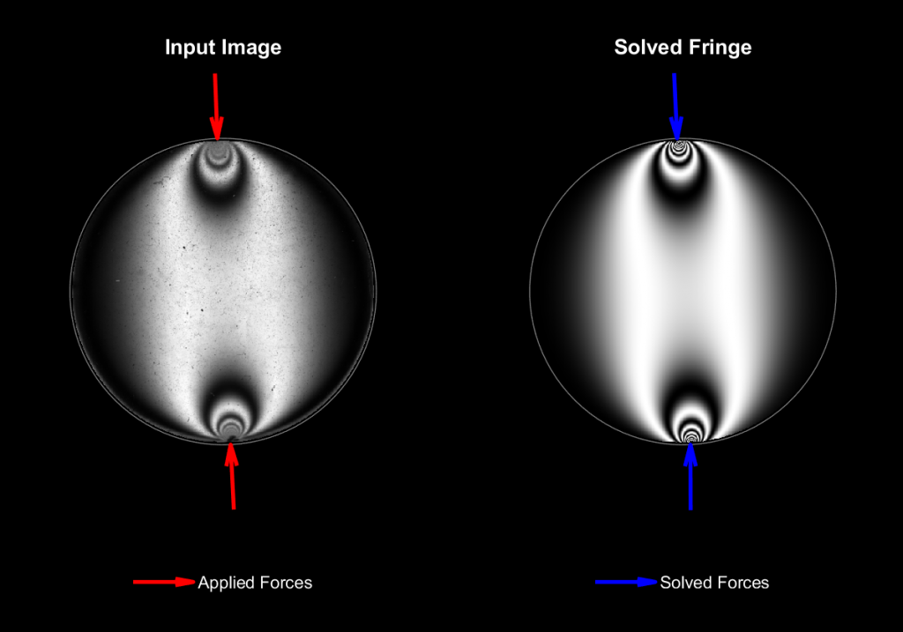
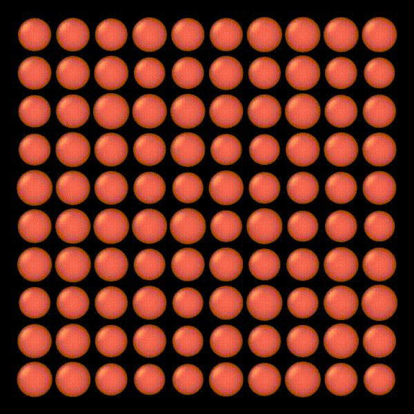

Fig 1:Photoelastic fringe patterns in a stressed granular material (image from [1])
Photoelastic Grain Solver – Kamrin Group
The Photoelastic Grain Solver (PeGS) is a MATLAB-based tool developed to extract per-particle contact force measurements from images and video recordings of photoelastic granular materials. These materials consist of transparent, birefringent disks placed between crossed polarizing filters. When subjected to mechanical stress, each disk produces a distinctive light interference pattern, known as a fringe pattern, due to stress-induced birefringence. The intensity and geometry of these fringes directly reflect the internal stress distribution within each particle.

Fig 2: Fringe in 1.4N Diametric Load Case – PeGS force solution within 3% of applied force.
(Kamrin Group, unpublished data)
PeGS estimates the contact forces on each particle by comparing experimentally observed fringe patterns to simulated patterns generated from hypothesized force configurations. Using a nonlinear optimization routine, the solver iteratively adjusts these force configurations to minimize an error function that quantifies the difference between the simulated and observed patterns.
Engineering Contributions & Improvements
Under the guidance of Professor Kenneth Kamrin, my research partner Truman O'Brien and I have developed and implemented several algorithmic improvements to PeGS aimed at enhancing both its computational efficiency and accuracy.
Analytic Gradient Integration
We derived and incorporated an analytic expression for the gradient of the solver’s error function, replacing MATLAB’s default finite-difference approximation. This significantly reduces computational cost per optimization step.
Image Multi-Scaling Framework
Introduced a method that begins optimization at a lower image resolution and incrementally refines the solution at higher resolutions, reducing overall solve time while preserving force accuracy.
We are now actively developing a new optimization routine for PeGS that solves multiple particles simultaneously using physical constraints like Newton's third law at contacts to improve performance in dense granular packings.

Fig 3: PeGS solver routine graphic
(Truman O’Brien)

Fig 4: DEM Simulation to Generate Packing
(Kamrin Group, unpublished data)